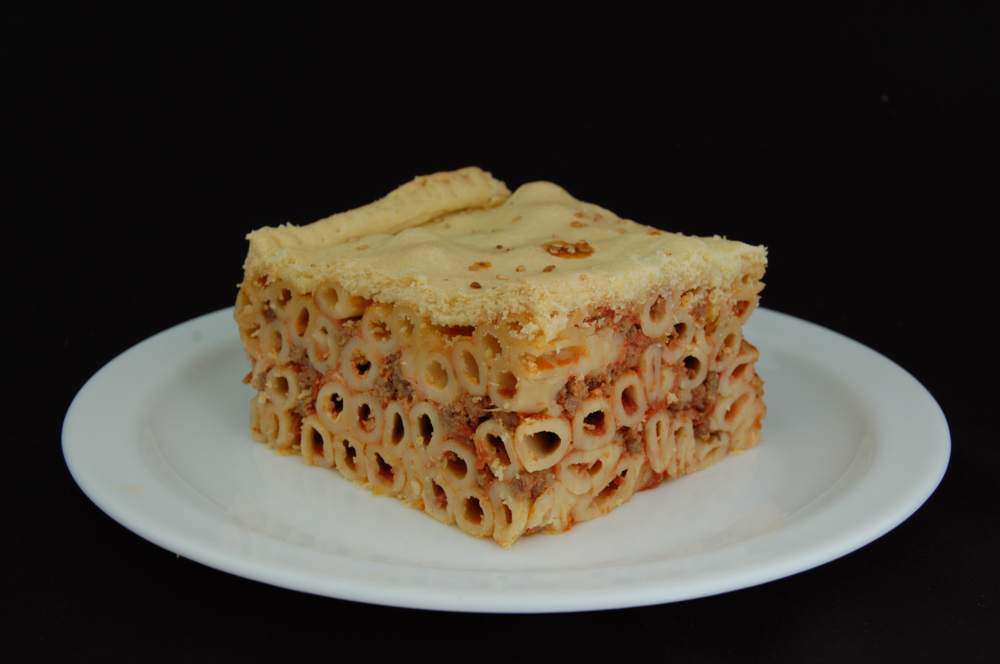

Gastronomía
La cocina maltesa nace de la larga relación entre los malteses y los españoles que han gobernado las islas. La fusión de sabores le ha dado a su cocina un sabor distintivo dentro de la cocina mediterránea. Aunque cuenta con muchos platos originarios, muchas recetas presentan una fuerte influencia culinaria italiana (especialmente siciliana) y turca. Algunos platos típicamente malteses son ftira biż-żejt, ġbejniet, pastizzi y Ross il-Forn . El froż-del , más bien conocida como la comida de los presos, es un plato muy típico entre los malteses.
